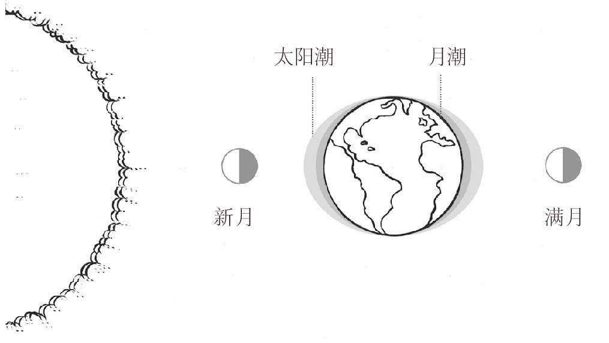

早在人类发明“计时”概念之前，地球、太阳、月亮和星辰就已经有自己的运行周期和节奏。地球的旋转、四季，太阳和月亮的引力效应，树木和植物的生长规律，都是这个世界自有的那套复杂且相互关联的自然计时系统的一部分。
每一天，太阳东升西落，地球绕太阳旋转。地球绕太阳公转一圈为一年，公转规律为全球划分了季节，为大部分动植物生命提供营养，并掌控它们的生活习性。地球上不同的位置，其日升日落的时间大不相同。赤道附近的热带地区，太阳大约在早6点升起，晚6点落下，从不改变，创造了一个近乎完美的12小时的白昼。但在地球两极，白天的长短变化多端，有时太阳从不升起，有时又从不落下。
在我们眼里月亮似乎只有一张“脸”，但每个月的每一天，太阳照射在月球的不同部分。满月时我们能看到月球的整个光亮面，相邻的两次满月大概相距29天12小时，人们根据这个时间创造了“月份”，但又对其做了调整以适应我们常用的阳历，现在每个月平均时间为30.4天。
月球和地球之间的近距离（约38万千米）产生了巨大的引力，从而引发了海洋潮汐。当月球围绕地球运动时，在靠近月球的一侧，海洋里的水因引力而上涨并凸起，这些水跟着月亮环绕地球汹涌澎湃，从而形成“高潮”。地球本身被月球牵引会产生惯性，因此在远离月球的另一侧引发海水上涨形成第二次“高潮”。所以当月球绕着地球旋转时，沿海地区每天都有两次高潮。
太阳距离地球较远，所以跟月球比起来，太阳的引力影响较小。但是当太阳、月球和地球呈一条直线时，太阳引力和月球引力相互叠加将制造更强的“大潮”。每隔14天会发生一次大潮。由于月球公转与地球自转，两次高潮之间大概差12小时25分钟。

大潮导致高潮时水面更高、潮流更强
但月球对海洋的影响并不仅仅体现在潮汐上，它还影响海洋生物。牡蛎随月球引力而开关贝壳。最佳钓鱼时间显然是新月之时——当月亮运行到地球和太阳之间的时候，我们从地球上完全看不到太阳或只能看到一弯窄窄的月牙。
极其罕见的“蓝月”
“蓝月”是指出现在一个月中的第二个满月，相当罕见，但偶尔也会出现，大概每5年2次。假如一个月有31天，这个月的第一天若出现满月，则最后一天会出现第2次满月。
“蓝月”也可以指蓝色的月亮，当来自火山或火焰的污染和灰烬充满大气，我们眼中的月亮看起来就像是“蓝色”的。